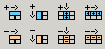

Lorsqu'on sélectionne la balise <TD>, le panneau Configuration Cellule est affiché. Apart les attributs des cellules, ce panneau permet la configuration des rangées et colonnes à travers un groupe spécial de boutons:
Fusionner Colonnes
Pour fusionner deux ou plusieurs colonnes, il faut cliquer sur le bouton Fusionner Colonnes. Chaque fois qu'on clique sur ce bouton, la cellule courante fusionne avec la suivante.
Fusionner Rangées
Pour fusionner deux ou plusieurs rangées, il faut cliquer sur le bouton Fusionner Rangées. Chaque fois qu'on clique sur ce bouton, la cellule courante fusionne avec celle d'en dessous.
Fractionner Rangées
Si l'on clique le bouton Fractionner Rangées lorsque le curseur est à l'intérieur d'une rangée qui n'est pas fusionnée avec une autre, l'éditeur KTML3 affichera un message d'erreur: “Cette cellule n'est pas le résultat d'une fusion et ne peut pas être fractionnée.”. Sinon, la cellule sera fractionnée chaque fois qu'on clique sur le bouton Fractionner Rangée telle que chaque cellule corresponde à une seule rangée.
Ajouter Colonne
Une autre fonctionnalité importante de l'éditeur KTML3 est la possibilité d'ajouter des colonnes nouvelles aux tableaux. On doit placer le curseur à l'intérieur d'une cellule et cliquer sur le bouton Ajouter Colonne. La colonne nouvelle est insérée à la gauche de la colonne courante.
Supprimer Colonne
On peut également effacer une colonne existante dans un tableau en plaçant le curseur à l'intérieur d'une des cellules de la colonne et en cliquant sur le bouton Supprimer Colonne.
Ajouter Rangée
La fonctionnalité “Ajouter Rangée” est très semblable à
“Ajouter Colonne”.
On doit placer le curseur à l'intérieur d'une cellule et cliquer sur le bouton Ajouter Rangée. La nouvelle rangée sera insérée en dessus de celle courante.
Pour supprimer une rangée, il faut placer le curseur à l'intérieur d'une des cellules de la rangée et de cliquer sur le bouton Supprimer Rangée.